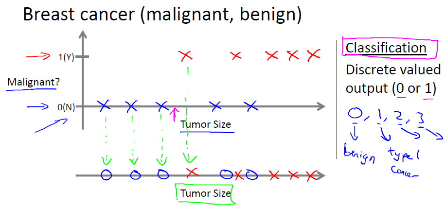
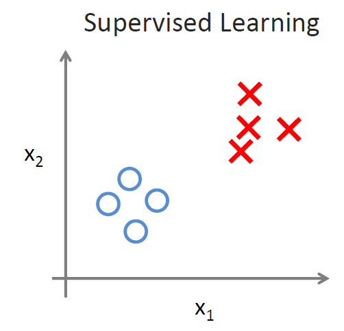

引言¶
以下是第一课“引言”的PPT课件资料，视频可以在Coursera机器学习课程上观看或下载： ppt pdf
机器学习定义¶
机器学习是人工智能的一个分支，目标是赋予机器一种新的能力。机器学习的应用很广泛， 例如大规模的数据挖掘（网页点击数据，医疗记录等），无人驾驶飞机、汽车，手写手别， 大多数的自然语言处理任务，计算机视觉，推荐系统等。机器学习有很多定义， 广为人知的有如下两条：
- Arthur Samuel (1959) [1]: Machine Learning: Field of study that gives computers the ability to learn without being explicitly programmed.
- Tom Mitchell (1998) : Well-posed Learning Problem: A computer program is said to learn from experience E with respect to some task T and some performance measure P, if its performance on T, as measured by P, improves with experience E.
例子 ：对于一个垃圾邮件识别的问题，将邮件分类为垃圾邮件或非垃圾邮件是任务T， 查看哪些邮件被标记为垃圾邮件哪些被标记为非垃圾邮件是经验E，正确识别的垃圾邮件或 非垃圾邮件的数量或比率是评测指标P。
机器学习算法的类型¶
- 有监督学习(Supervised learning):通过生成一个函数将输入映射为一个合适的输出 （通常也称为标记，多数情况下训练集都是有人工专家标注生成的）。例如分类问题， 分类器更加输入向量和输出的分类标记模拟了一个函数，对于新的输入向量，得到它的分类结果。
- 无监督学习(Unsupervised learning):与有监督学习相比，训练集没有人为标注的结果。 常见的无监督学习算法有聚类。
- 半监督学习: 介于监督学习与无监督学习之间。
- 强化学习(Reinforcement learning): 通过观察来学习如何做出动作，每个动作都会对环境 有所影响，而环境的反馈又可以引导该学习算法。
其他的类型包括推荐系统，Transduction，Learning to learn等。
有监督学习详解¶
有监督学习主要会提供一些标注样本，分为两大问题：回归和分类
房屋价格预测-回归(Regression): 预测连续的输出值（价格)

乳腺癌（良性，恶性）预测问题-分类(Classification): 预测离散的输出值(0, 1)
{kind=link}
这两者的区别在于分类的output为离散的，而回归的output为连续的，这样讲可能比较抽象，比如上面的例子就是回归，因为output为price，虽然看起来price是离散的，但是他的值是可以无限制的，因此是连续的，而下图为分类的例子，因为output=恶性or良性，可能的取值就两个值，因此为回归。
无监督学习详解¶
给定一组数据，这些数据从外表上来看没有什么差别，都落在了坐标轴上， 我们的目标是从中找出结构，并将其分组，如下图，是有监督学习和无监督学习的对比， 无监督学习给出的是聚类的例子，每个数据都是以原点的形式出现的， 但是我们能够很清晰地将这些点分成两组(group into)：
{kind=link}

非监督学习的例子
- Google News，会将一些新闻进行聚类（分组），即每个大类的新闻下面都会有多个URL，这些URL虽然来自不同的网站，但是都是这一类新闻，比如：
{kind=link}
- Market segmentation：将客户分组为几组，对每组客户进行不同的销售手段，如下图：
{kind=link}
基因序列分析，社会网络分析等...
- 特别的例子： 鸡尾酒会问题（Cocktail party problem）
“ 鸡尾酒会问题”（cocktail party problem）是在计算机语音识别领域的一个问题， 当前语音识别技术已经可以以较高精度识别一个人所讲的话，但是当说话的人数为两人或者多人时， 语音识别率就会极大的降低，这一难题被称为鸡尾酒会问题。

鸡尾酒会问题算法（一行代码）:
[W,s,v] = svd((repmat(sum(x.*x,1),size(x,1),1).*x)*x');
一些参考资料:
- 解决方法ICA demo: http://research.ics.tkk.fi/ica/cocktail/cocktail_en.cgi
- http://www.vislab.uq.edu.au/education/sc3/2001/johan/johan.pdf
- http://www.physorg.com/news75477497.html
- http://en.wikipedia.org/wiki/Cocktail_party_effect
- http://www.scientificamerican.com/article.cfm?id=solving-the-cocktail-party-problem
以下关于”cocktail party problem”的文字引用自该链接： http://xiaozu.renren.com/xiaozu/121443/thread/335879281
stanford机器学习公开课(ml-class.org)第一章unsupervised learning那段视频里解决鸡尾酒会问题(cocktail party problem)就写了一行代码：
[W,s,v] = svd ((repmat(sum(x.*x,1),size(x,1),1).*x)*x');
lz土人感觉是用了PCA的方法。。可是W运行出来丝毫没有unmixing的效果。。。用的是采样频率16kHz的Speech-Speech和Speech-Music两个样例。。
google这条代码有post说这是ICA，我就迷茫了。。。看不出来怎么是ICA了。。折腾一夜了，毫无头绪。。。
顺便求此问题的demo。。各种语言均无妨。。
练习题¶
你现在在证券所上班，对于某个特定的股票A，希望根据以往的价格走势，来推算出明天的价格是多少，这算是分类问题还是回归问题？
答：属于回归问题，因为股票的价格是连续的，因此是回归问题；
我们给出4个问题：
- 我们已经知道了这一堆是垃圾邮件，想要将这些垃圾邮件继续分子类；
- 给定一个数据集，全是心脏病的病人，我们需要将他们分成不同的簇，对每个簇用不同的治疗方法；
- 两个足球队要比赛，根据以往的数据，预测哪个队会赢；
- 根据一个人的DNA，预测10年后得糖尿病的几率；
哪些是监督学习，哪些是非监督学习？
答：(1)和(2)是监督学习，(3)和(4)是非监督学习；
Footnotes
| [1] | Arthur Lee Samuel (1901–1990) 教授是美国人工智能领域的先驱，他设计了一些下棋程序，可以通过不断的下棋来学习，从而达到很高的下棋水平。 |